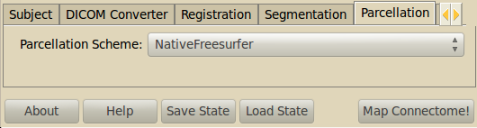

Connectome Mapper Stages¶
Project settings / Main Tab¶

- Project directory
- Select the root folder of your project which contains the subfolders for all the subjects of this project.
- Imaging Modality
- What type of data to process. Currently supports DSI, QBALL and DTI data.
- Stages
- Select the stages you want to run. A good practice is to incrementally select the stages to be processed. So you keep good control of what is going on.
- Inspector
- Let you inspect the result of different processing stages, using external packages such as FSL, Freesurfer, Diffusion Toolkit or matplotlib.
Buttons
- About: Information about the pipeline, copyright, contributors etc.
- Help: Show help information for each processing stage
- Save state: Save the entered information, parameters etc in order not to enter them again.
- Load state: You can load a saved state.
- Map Connectome! : Start the processing of the selected stages. Information and error messages are written to the console.
Create Folder¶
This stage creates the folder structure for your subject and timepoint. You can run this stage before you added the DICOM files in the corresponding RAWDATA folders. By modifying subject name and timepoint, you can quickly create the set of folders for your study.
DICOM Converter¶

Converts the raw DICOM data files in the RAWDATA subfolders into the Nifti format. It is possible to convert independently the structural data (T1 and T2), the diffusion (DSI, DTI, QBALL) and the functional data (rs-fMRI). Performs required flipping if needed. If the DICOM files have no file name ending, just enter * as the file pattern.
If you have not acquired any structural T2 image or rs-fMRI image, you can deselect the corresponding checkboxes. However, diffusion data and T1 data are required.
For the conversion, packages such as Diffusion Toolkit and Nibabel are used.
Registration¶

This stage allows to register the structural T1 image (where the parcellation of the cortical surface is extracted) onto the diffusion space.
Choose Linear or BBregister if you only acquired the structural T1 image and you miss the additional T2. In this way, the stage will try to align the T1 directly onto the b0 image.
If additional T2 images have been acquired, Nonlinear registration can be performed. A two steps procedure is performed:
- First, a linear registration if performed between the T1 and the T2; these images don’t share the same contrast but there are no distortions between them, so a linear registration will suffice.
- Then, a nonlinear registration will try to align the T2 image and the b0 one, and then the two transformations are concatenated. To preserve edges, a intermediate skull-stripping step is performed on both images by using BET.
We use the nonlinear registration approach in order to mitigate the nonlinear distortions which are present in diffusion images. Future versions of the pipeline will account for other methods to achieve this (e.g. fieldmaps).
Linear Registration¶
The FSL linear registration tool FLIRT is used. Default parameters (which can be modified) generally give good results in most cases.
Nonlinear Registration¶
The FSL nonlinear registration tool FNIRT is used to perform this step. Default parameters (which can be modified) generally give good results in most cases.
BBregister Registration¶
The FREESURFER cross-modal registration tool BBREGISTER is used. Differently from FSL FLIRT, BBREGISTER registration algorithm exploits the FREESURFER segmentation results and can therefore be more robust in the context of this pipeline. Default parameters (which can be modified) generally give good results in most cases.
Segmentation¶
We use Freesurfer’s recon_all for the segmentation. You can provide custom parameters for recon_all.
Parcellation¶
We provide two parcellation schemes.
- NativeFreesurfer
- The native Freesurfer parcellation using the Desikan-Killiany Atlas extended to include subcortical regions.
- Lausanne2008
- The multi-resolution parcellation that was used in Hagmann et al. 2008. It is updated to incorporate the new atlases provided by Freesurfer 5.0 (including insula).
Warning
The Lausanne2008 parcellation is in experimental stage. Use it with caution. More information about the parcellation.
Apply registration¶
The registration transformations are applied to the white matter mask and the parcellation to map them into the diffusion space.
Reconstruction¶

Use DiffusionToolkit for extracting the orientation distribution function (ODF), the default parameters are the same as DTKs.
Please refer to odf_recon or dti_recon documentationfor the meaning of each parameter.
You can also set parameters for the DTB_dtk2dir conversion. This can be helpful if you have to flip axes before tractography.
- DTB_dtk2dir parameters
--ix invert x axis --iy invert y axis --iz invert z axis
Tractography¶

This module runs a classical streamline fiber-tracking algorithm (Weeden et al. (2003), Diffusion spectrum magnetic resonance imaging (DSI)) tractography adapted to deal with possible multiple directions inside each voxel.
The following parameters are automatically set by the mapper: Tracking is performed inside the white matter mask computed by FreeSurfer (–wm parameter) and is started in each non-zero voxel of the seed mask (–seed parameter); if no such a mask is give, then all voxels will be considered. Trajectories are iteratively propagated following coherent diffusion directions inside each voxel (–dir parameter) by using a fixed step size (–stepSize parameter) and the Euler integration method, and are stopped when a stopping criteria is met.
The following parameters are recommended to be explored: Stopping criteria are: trajectories are outside the white matter mask or no compatible direction are found below a specific crossing angle, –angle parameter). Only diffusion directions with a volume fraction greater than a threshold are considered (–vf parameter). For some imaging modalities, this parameter has no sense (e.g. DTI) and it is ignored. Multiple seed points can be created inside each voxel (–seeds parameter); this way, multiple trajectories will be started for every direction inside each voxel.
Fiber Filtering¶

- Apply spline filter
- Fibers are spline-filtered using diffusion toolkit. Please refer to spline_filter documentation.
Apply cutoff filter: Fibers can be filtered depending on their length:
- Lower cutoff: Fibers smaller than this cutoff length are filtered.
- Upper cutoff: Fibers longer than this cutoff length are filtered.
Connection Matrix Creation¶
This stage merges the grey matter labeling and the tractography to create a connection matrix or brain graph for each resolution. A final tractography file is stored for each parcellation containing only fibers that start and end in grey matter regions.
Very general edge measures are used to construct the network, namely the number of fibers between two regions and their average length. Further measures can be computed using the Connectome Viewer using appropriate scalar volumes, tractography and label arrays.
- Compute curvature
- Compute the curvature value for each of the filtered fibers
Resting-State fMRI Processing¶

This stage produces average time-courses for each cortical ROI, from resting-state fMRI (rsfMRI) data. FSL MCFLIRT is used to realign the rsfMRI time points and compute the mean rsfMRI volume. The T1 volume is then registered to the mean rsfMRI volume. It is possible to choose between two different linear registration tools: FLIRT or BBREGISTER (see ‘Registration’ step). The linear transformation T1-to-mean_rsfMRI is then applied to the cortical ROIs’ volumes corresponding to the selected parcellation scheme, and the averaged rsfMRI time-course is computed for each ROI.
The averaged time-courses are saved as Numpy matrices of dimensions number_of_ROIs X number_of_timepoints. Check the ‘Save .mat format?’ case if you wish to save the average time-courses in mat format too.
The output average time-series matrix can be suitably analysed through the Connectivity Decoding Toolkit (Richiardi J, Eryilmaz H, Schwartz S, Vuilleumier P, Van De Ville D. 2011. Decoding brain states from fMRI connectivity graphs. Neuroimage 56: 616-626). In this case, check the ‘Save .mat format?’ option, then import the matrices directly into Matlab Fand use them to feed the Brain Decoding Toolkit’ function ‘connectivityDecoding_filtering’.
Connectome File Format Converter¶

Raw and processed data are stored in the connectome file for further analysis in the Connectome Viewer or elsewhere.
- All connectomes
- All the connectivity information for the different resolutions.
- Original Tractography
- The unfiltered tractography result as produced by DTB_streamline.
- Filtered Tractography
- The tractography result after potential spline and length cutoff filtering.
- Filtered fiber arrays
- The filtered tractography contains also so-called orphan fibers, which are fibers that do not start or end in grey matter voxels. The filtered fiber arrays contain are NumPy arrays labeling the individual fibers as orphans (-1) or connection two regions.
- Final Tractography and Labels
- For each parcellation/resolution, a tractography files and a corresponding fiber label array is produced. The tractography contains much less fibers, because orphan fibers are filtered out, and only fibers to contribute to the final connection matrix are shown.
- Scalar Maps
- For DSI datasets, we provide the computation of a few scalar maps based on the reconstructed Orientation Density Functions (ODF) that might be relevant in comparing subjects. We provide GFA, skewness, kurtosis and P0 maps.
- Raw Diffusion data
- Store the raw diffusion data in Nifti format. Beware that Nifti files do not contain all the information from the DICOM series.
- Raw T1 data
- Store the raw T1 data in Nifti format.
- Raw T2 data
- Store the raw T2 data in Nifti format if available.
- Parcellation Volumes
- Store the segmentation and parcellation results (Freesurfer aseg, white matter, ROI parcellation in T1 and diffusion space.
- Surfaces
- Store the surfaces extracted by Freesurfer in Gifti format.
Configuration¶

- E-Mail notification
- If you have installed an SMTP server, you can enter a list of email addresses to which an email is sent after the completion of a stage. On Ubuntu, you can for instance use Postfix.
- Environment variables
- They are recognized by your current .bashrc settings. These fields should not be empty, otherwise you have to add the missing environment variables in your environment. Changing the paths only in this option is not sufficient.
Warning
If you want to explore the pipeline parameters, beware that the output of the stages will be overwritten. Alternatively, you can duplicate the data folders.